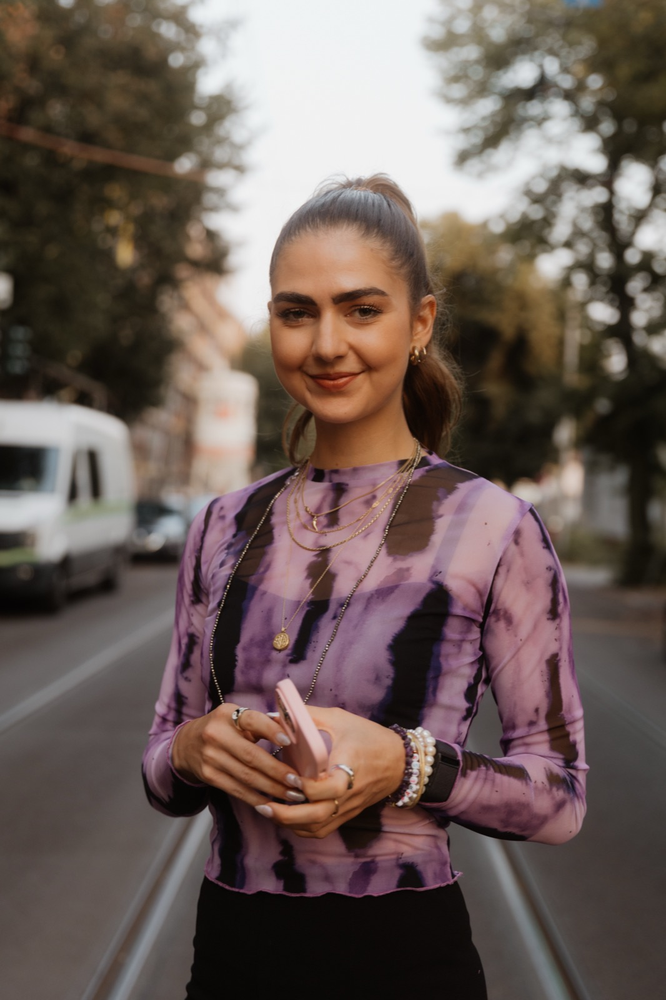
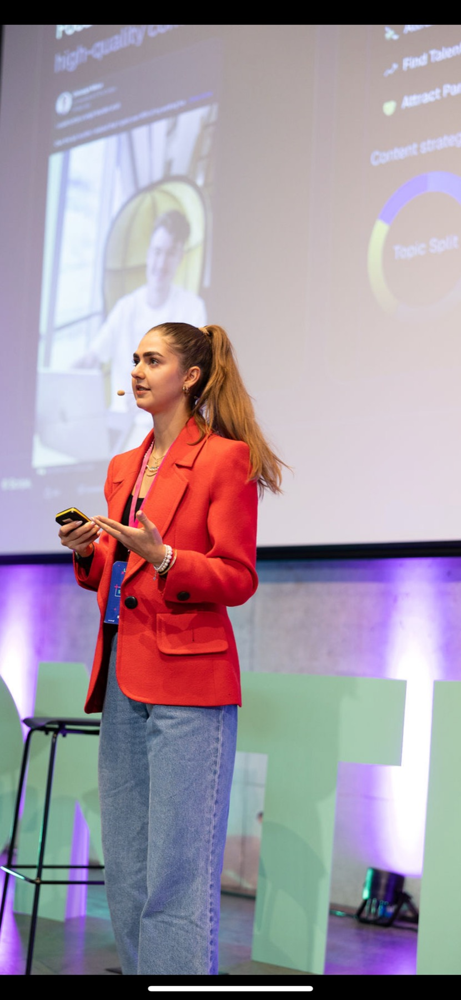
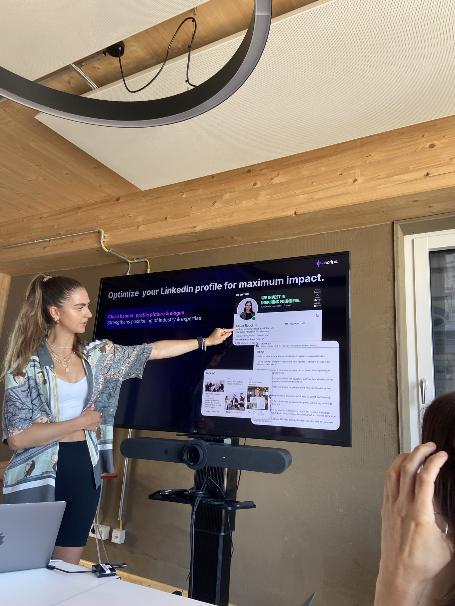
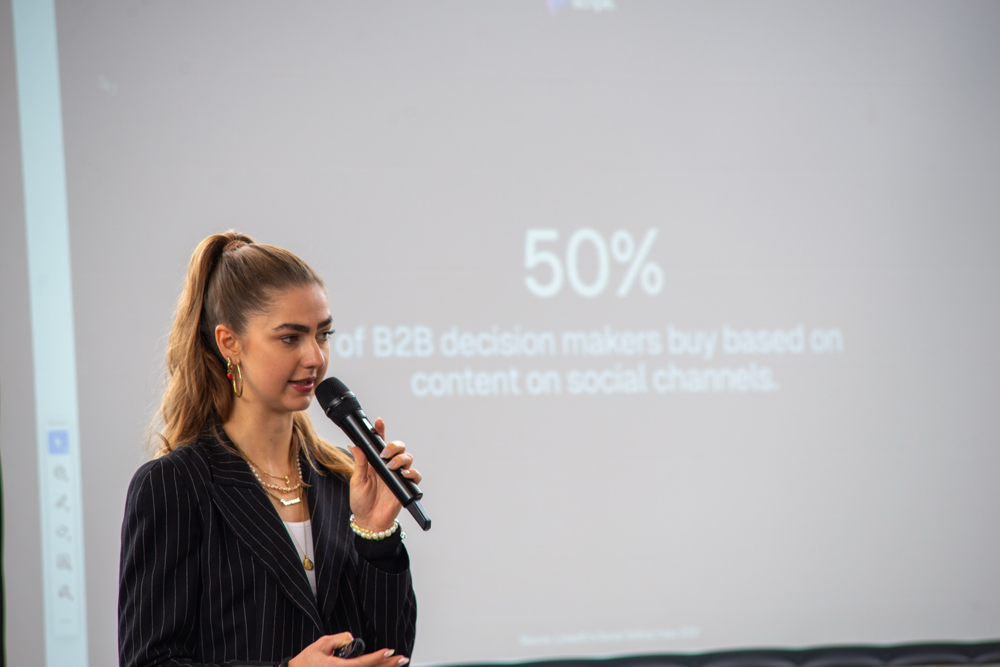

Founder, brand builder & strategic sparring partner.
I started my career as a journalist — then spent the last years building companies, brands and communities from scratch, and increasingly helping other founders and teams do the same. Today, I work with selected founders, startups and teams on positioning, storytelling, personal brands, content, community and strategy.

Before thinking about content, I like to get to the root of the story — what do you stand for, who are you actually speaking to, and what do you want to be known for.
I help founders and teams define their positioning, target audiences, narratives, messaging and the topics they can credibly own.
Turning expertise, experiences and opinions into strong personal brands. The goal isn't simply to post more — it's to build a voice people recognise, trust and remember.
Once the story is clear, I help translate it into something people can actually experience — from overall brand and content strategy to campaigns, launches, editorial formats and brand voice. Positioning → narrative → strategy → execution.
I love building brands people don't just consume — but want to be part of. Community strategy, partnerships, collaborations, events and experiences that bring a brand to life beyond its product.
Sometimes you don't need another agency or full-time hire — you need someone who understands building companies, can look at the bigger picture, and isn't afraid to ask the difficult questions.
Alongside my strategic work, I collaborate with a small number of brands through my own channels and community. I don't love simply placing products into content — I want to find the story around them. For selected partners, I develop the narrative and creative angle based on the brand's goals, integrated naturally into topics, experiences and conversations already happening across my platforms.
Built a consumer startup and community around circular fashion — from zero: brand, positioning, community, partnerships, storytelling and growth.
Built and scaled an AI company focused on personal branding and founder-led content — working across brand, positioning, marketing, GTM, sales, community and customer strategy with hundreds of founders and teams.
Currently building a community-led brand around movement, food, recovery and experiences — a chance to explore a different way of building: intentionally, community-first, with space to experiment.
How do you make people care?


For companies looking for senior strategic support without another full-time hire.
Positioning, brand strategy, personal brands, content strategy, community, launches or specific challenges.
Ongoing strategic support for founders and leadership teams.
From positioning and storytelling to personal branding and content.
Selected story-led collaborations through my own platforms and community.
I'm keeping space for a small number of projects and partnerships with ambitious people and companies building things that matter.
I'm particularly drawn to consumer, community, sports, wellness, culture and founder-led companies — but good people, interesting ideas and meaningful stories matter more to me than the industry.
